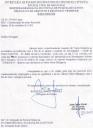

Nossa intenção aqui é disponibilizar material que acrescente informações para quem se proponha a digeri-las, e na medida do possível desencadear debates e procurar caminhos para recuperar o que já está podre. Porém é inevitável o presente post para ajudar na divulgação de um outro blog, que eu tomei conhecimento através do Cultcoolfreak do Roger.
Trata-se do Blog "Flit Paralisante", redigido pelo Delegado da Polícia Civil de São Paulo Dr. Roberto Conde Guerra.
Esse cidadão colocou voluntariamente sua vida em grande risco, simplesmente porque tem a percepção vital de entendimento deste termo que usei para denominá-lo : é um legítimo cidadão.
Delegado Titular do 7º Distrito Policial - Santos/SP, ele cismou em combater a corrupção na Polícia Civil paulista. Por conta disso acabou afastado e colocado à disposição!
{kind=link}
Tudo isso em torno do crime organizado envolvendo maquininhas, tal como no Rio, e cujo esquema foi dissecado e divulgado às massas em reportagem da revista Isto É. Uma vergonha para a instituição, mas um grande passo para seu resgate.
Recomendo fortemente aos policiais que por aqui transitam, e também aos demais amigos navegantes, a leitura dos textos postados no referido blog, preferencialmente em ordem cronológica para melhor entendimento. A leitura é difícil, eu sei, pois não há divisão de parágrafos o que torna o trabalho cansativo para as vistas, mas vale o esforço. Se é tudo verdade ? Não sei, mas que é verossímel é.
E para consubstanciar, o recado que ele deixa é o mesmo no qual insistimos desde a criação deste espaço: ACORDEM POLICIAIS ! Temos que provar que o imutável não o é e pode sim ser corrigido, temos que recuperar a dignidade e o reconhecimento de nossas profissões, temos que nos livrar do estigma de ladrões, corruptos e "puliças"! Somos Policiais, homens, mulheres, Civis e Militares.